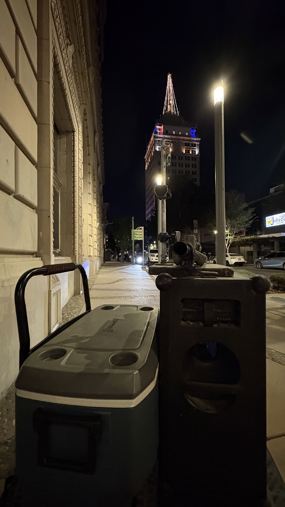
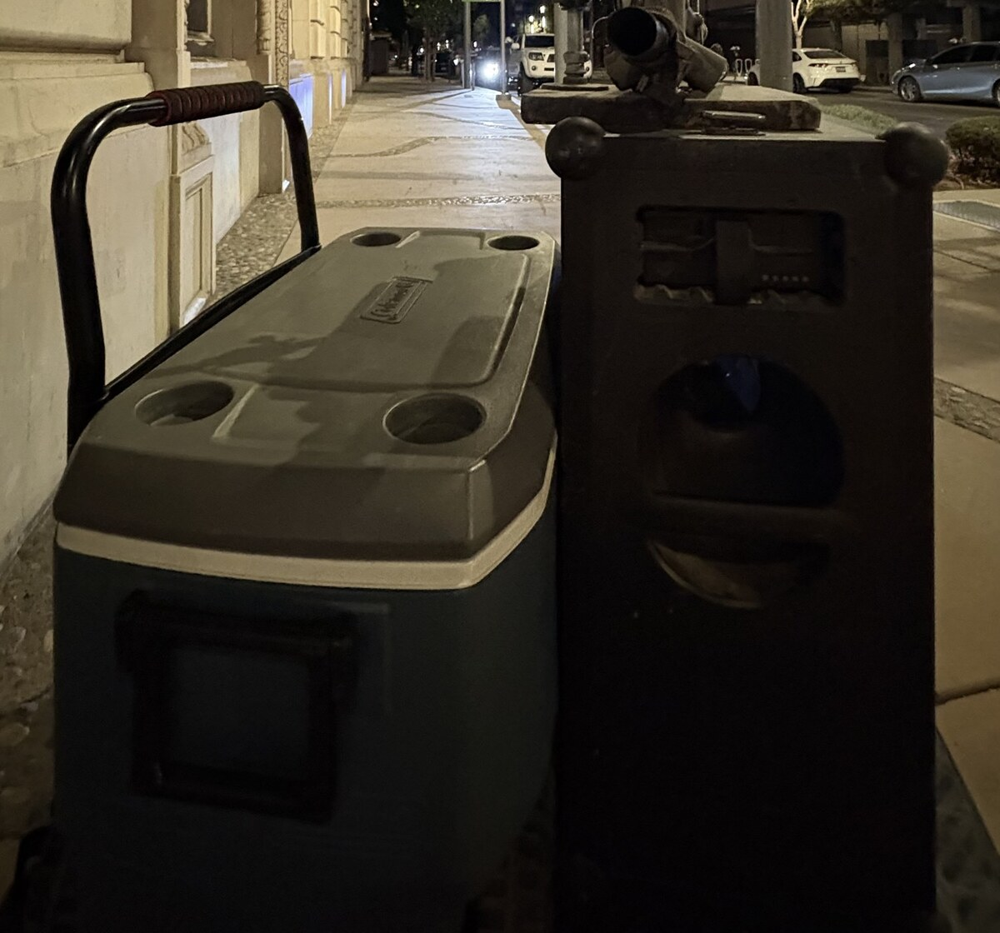

I was here at Tulare and Fulton. The cooler was on the sidewalk. The speaker was on. I had begun to sing.
A gentleman named Ryan came out in a white and blue golf-style shirt and started asking questions in the middle of the performance. That is something that happens every now and then. What it is, when it happens, is a lack of respect for the fact that I am conducting business. Interrupting a live performance to extract an answer is rude. It is also a way of taking control of the set without ever having to say that is what you are doing.
I did not put the microphone aside and try to talk through the song. I pressed pause. I asked a civil question: "I'm sorry. Is there a problem?"
I chose to be irritated in order to stay civil. That is the trade. People were listening. He had not introduced himself. He had simply begun talking while I was beginning to sing.
The corner
Tulare and Fulton. Downtown commercial street. Masonry walls. Buses. Car radios. A tower with a 40-foot first floor.
The question
"What time you were planning on singing until." Not an introduction. Not a meter. A stop time embedded in a request for information.
The answer
I had not made any plans. Plans are what you invent after someone has already decided you should be done.
The loaded question
His immediate answer was no, he just wanted to ask what time I was planning on singing until. That is how he stated it. Stated that way, the question was already an assertion. It assumed a planned stop. It invited me to name the hour of my own shutdown so he would not have to be the person who asked me to stop.
After the loaded question came the claim. People lived in the building directly across the street. I told him I did not know anybody lived in those buildings. I thought they were empty as a result of government corruption. He said the first two floors were rented by lawyers and that the floors above were occupied. He said he had lived there for seven years.
That building is the Pacific Southwest Building, 1060 Fulton, the old Security Bank tower. It sits at the heart of the old mall, southeast of Fulton and Mariposa, a fifteen-story classical revival with a forty-foot first floor and a terra cotta crown. I have been inside that first floor. It is ornate. The ceiling is high. It is the kind of room a city builds when it still believes it will be a city.
I asked him his name. White gentleman, about my height, younger than me. Ryan. Then I explained why I am sensitive to questions in the middle of a set. It is common for people to assault and batter a street performer by grabbing the microphone. Interrupting the work without regard for the rights of the person doing the work is the opening move. He did not have much of a response. He did not apologize. He moved around the subject.
I told him not to take it personally, and then I named the technical problem. On a technical basis he had asked a loaded question. He intended to assert that I planned to stop. I did not have a plan to stop. The question was therefore loaded. He did not want that discussion. He wanted a stop time.

What the law actually is
A private resident does not get to close a sidewalk business by asking when it will end. The legal path, if there is a genuine noise problem, is to call the police, have an officer arrive, measure the sound the way the code requires, and advise. I know that path. I have had to know it because disputes over who may make how much sound, at what hour, under what facts, are the disputes that turn into hands on a microphone.
Fresno regulates noise in Municipal Code Chapter 10, Article 1. The article is old. It was rewritten in 1972 and has been patched since. It still talks like a city of lots and property lines, not like a downtown canyon of masonry, buses, and open windows.
Ambient noise, under Section 10-102, is the all-encompassing sound of a place, averaged over fifteen minutes, without the offending noise included. If the real street is quieter than the table in the code, the table becomes the ambient. The table is not subtle.
| District | Hours | Ambient floor |
|---|---|---|
| Residential | 10 p.m. to 7 a.m. | 50 dB |
| Residential | 7 p.m. to 10 p.m. | 55 dB |
| Residential | 7 a.m. to 7 p.m. | 60 dB |
| Commercial | 10 p.m. to 7 a.m. | 60 dB |
| Commercial | 7 a.m. to 10 p.m. | 65 dB |
| Industrial | Anytime | 70 dB |
Source: Fresno Municipal Code Section 10-102, as still cited in City environmental documents through 2025 and 2026. Tulare and Fulton is downtown commercial, not a residential cul-de-sac.
Section 10-105 is the general ban. No person shall make, on a premises or on a public street, alley, or place, any sound that causes discomfort or annoyance to a reasonable person of normal sensitiveness residing or working in the area, unless the article authorizes it. Radios, instruments, and amplification devices are named. That sentence is the one people wave like a club. It is also the sentence that still requires a reasonable person, in the area, under the rest of the article.
Section 10-106 is the prima facie rule. Sound that exceeds ambient at the property line of the person offended, or inside an adjoining living unit of a condominium or apartment house, by more than five decibels is treated as prima facie evidence of a violation. In March 2026 the Council adopted Ordinance 2026-7, a batch cleanup that amended 10-106 along with 10-603, 10-604, and 10-605. The measurement idea did not become a downtown entertainment standard. It stayed a property-line and adjoining-unit rule. The historic text even pointed at an old section number from a prior codification. That is how little this article has been rewritten for the street it now governs.
Amplified sound on a sidewalk has its own section. Section 10-108, Public Address Systems, is the one that actually names loudspeakers and sound-amplifying equipment used to transmit music or speech to people on a street, alley, sidewalk, park, or other public property. The operating hours in that section are 7:00 a.m. to 10:00 p.m. The level rule in that section is not "whatever a neighbor feels." It is fifteen decibels above ambient, measured at any property line. The volume must also not be unreasonably loud, raucous, or jarring to a reasonable person of normal sensitiveness in the area of audibility. There is a two-hundred-foot buffer from churches, schools, and hospitals. There is a registration process with the Controller. There is still no sentence that says a resident may halt a set by asking when it will end.
What 126 dB is, and what it is not
The speaker on that sidewalk is rated to 126 dB. That number is a manufacturer maximum. It is the capability of the box at close range under the rating method the factory used. It is not the sound at Ryan's window. It is not the sound at the property line of 1060 Fulton. It is not a fifteen-minute average. Sound from a small portable box falls off fast with distance. A canyon of stone can also throw it back. Those are two different physics problems. The code treats neither of them as a downtown fact.
A city that wanted a serious rule would measure at a stated distance, name A-weighting or C-weighting, name slow or fast response, name how long a burst may exceed the average, and name how reflections are handled. Fresno's article does not do that work for a sidewalk on Fulton. It gives you ambient-plus-five at a property line, ambient-plus-fifteen for a PA, a 10 p.m. cutoff for amplifying equipment, and a discomfort standard that a motivated complainant can read as "I live here."
The downtown the code refuses to see
The article does not create a Downtown Entertainment District table. Other cities do. They set one limit for a bar block and another for a house lot. They write weekend hours that are not identical to Tuesday. They measure at five feet from a facade, or at fifty feet from a device on a right-of-way. Fresno did not write that chapter for Fulton Street.
The article does not address sound reflected off surfaces. Tulare and Fulton is a hard room. Stone, glass, empty storefronts, a forty-foot banking hall across the way. A voice that is legal in an open field can come back off a wall and arrive at a window as a different event. The code still talks as if the receiving line is a suburban fence.
The article does not subtract the street. Buses brake. Delivery trucks idle. Car stereos leave a block of compressed bass that the sidewalk performer did not make. California Vehicle Code section 27007 already says a driver may not operate a sound amplification system that can be heard outside the vehicle from fifty feet or more while the vehicle is on a highway, except for emergencies, utilities, and certain event uses that a city may still restrict. That rule is aimed at moving cars. It is almost never the rule anyone walks outside to enforce at 9 p.m. on Fulton. The ambient that Section 10-102 tells you to average for fifteen minutes is full of those sources. A complaint that treats only the singer as the environment is not a measurement. It is a preference.
County rules changed in January 2025. Anonymous complaints. Meters. Graduated fines. That is the unincorporated county. Tulare and Fulton is the City of Fresno. Different sovereign. Different article. Mixing them is how people talk themselves into a power they do not have.

Rights, and the move that skips them
A person who lives on an upper floor of 1060 Fulton has a real interest in sleep. That is not in dispute. Lawyers on the first two floors have a real interest in being able to work. That is not in dispute either. The question is the method.
The lawful method is the one the code already wrote poorly and still wrote: hours, ambient, a property line or an adjoining living unit, a meter, an officer. The unlawful-feeling method, the one that keeps happening to performers, is to walk into the set, skip the name, skip the measurement, and ask a question that only works if the singer agrees to end. That is not a noise reading. That is an attempt to manage someone else's plans.
I am familiar with the difference between a sustained level and a burst. I am familiar with the hour when maximum levels drop so people can sleep. I am familiar with prior fights that turned into violence because nobody in the argument wanted the actual ordinance, only the result. Ryan did not want to talk about the law. He wanted to talk about my plans so he could interfere with the plans. That is where the conduct becomes inappropriate, even when the shirt is polite and the sentence is formed as a question.
What tonight was
Tonight was a man interrupting a performance, embedding a stop inside a request for a time, then producing residents in a tower I had believed was hollow. I paused. I asked if there was a problem. I said I had not made any plans. I named the loaded question. I asked his name. I told him why the interruption itself is the harm I watch for.
The tower is occupied. That fact is now on the record. The code is also on the record. It still does not know how to describe this corner. Until the City writes a downtown rule that accounts for reflected sound, vehicle radios, buses, and the difference between a speaker's rated peak and a fifteen-minute reading at a property line, neighbors and performers will keep having this conversation in the worst possible way: in the middle of a song, with no meter on the sidewalk, and with one person already sure the other should be done.
I had not made any plans.
Sources and context
- First-person record of the exchange at Tulare and Fulton, September 6, 2026, including the pause, the question "Is there a problem?", the reply that there was no problem except a request for a stop time, and Ryan's account of seven years in the tower with lawyers on the first two floors.
- Fresno Municipal Code Chapter 10, Article 1 (Noise Regulations), Sections 10-102 (ambient table), 10-105 (excessive noise), 10-106 (prima facie excess over ambient), 10-108 (public address systems: 7 a.m. to 10 p.m., fifteen decibels above ambient at a property line).
- City of Fresno Ordinance 2026-7, adopted March 26, 2026, amending Sections 10-106, 10-603, 10-604, and 10-605 as part of a multi-chapter cleanup. The amendment did not create a downtown sidewalk performance standard.
- City environmental documents through 2025 still reprint the 10-102 ambient table and treat Chapter 10, Article 1 as the operative noise article inside city limits.
- California Vehicle Code section 27007: no driver shall operate a sound amplification system audible from 50 or more feet outside a vehicle on a highway, with listed exceptions. Local authorities may further restrict event and advertising uses.
- Fresno County Noise Control Ordinance amendments effective January 2025 apply in the unincorporated county, not on this city sidewalk.
- Pacific Southwest Building / Security Bank Building, 1060 Fulton Street. Fifteen stories, 1925, R. F. Felchlin. First floor historically a banking hall with a very high ceiling. Upper floors converted in recent years to residences. Tallest building in Fresno.
- Speaker rating of 126 dB is a source specification, not a received level at a property line or window.